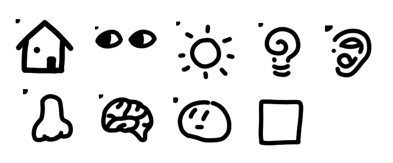
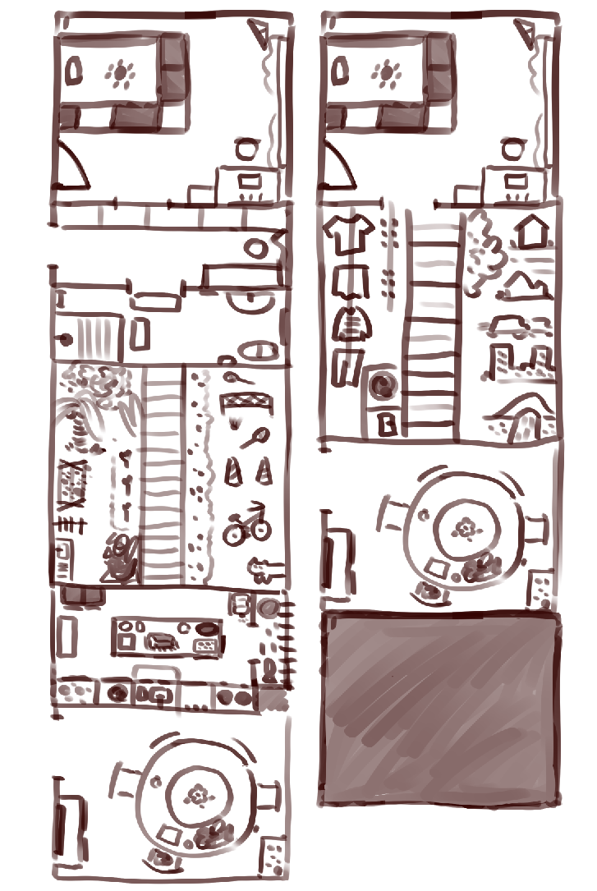
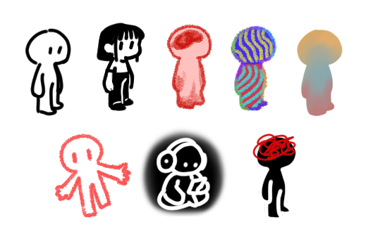

What intrigues me is the contradiction between map and home. Since the concept of “home” is completely decided by the map maker, which is me, the map shouldn’t be as simple as those we use daily. The fundamental approach to making a map is simply recording the map maker’s journey in this space, which in this case, I have to bring my experience to the table.
Home is only formed once the person has a physical and mental connection to this place in the long term. For me, my exploration of home is mainly through three directions: senses, memory, and symbolism.
Variation of cursors corresponding to each layer
Then the question moves to: What is the form of the map?
This brings up the egg-and-chicken philosophy: does location form based on landscape and roads, or does road appear naturally between locations?
Relating to the idea that map forms based on an adventure in time, I decided to make the map of my home vertically, defining “road” as “axis”. Instead of road spreading through location, location is relative to road. Due to my childhood tension on education, I spent most of my life inside the home that formed the boundary of a map.
Initial sketch for the home map
The rooms of the home may appear on the map multiple times but in various versions in response to time/journey. To fully depict my journey on a map and respond to its geographic information, I made a functional website to present various layers of home, listed below:
Layers I drew (portion)
I spent my class time mostly collecting inspiration and sketching my ideas for the project. Since this project is more about philosophy, I kept changing my definition of both “home” and “map”. This also shifts my ideas from catalog to stacked cards and then website, increasing its interactivity.
The "Me" related to each layer fo the space
The website boosts the map’savailability and openness to all users, people are free to combine any layers they want to see the visual combination. This is also scrollable and people can pause at any point for a deeper look. This project is also inspired by our previous talk on reenactment, cycle, and agent for layer. The map is the agent here to represent the narration.
Time spent:
two weeks(inspiration, researching) + two days (writing coding and drawing layers, cursors)
Don't get procrastinate like me!
Languages / softwares I used:
What my workspace looked like
See the coding here (Github)